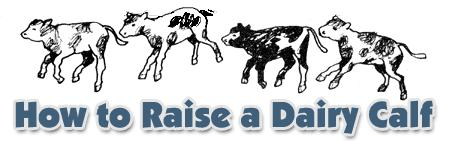

For most newcomers to the land-provided they're not the very strictest of vegetarians-the homestead dream includes at least one placidly grazing dairy animal. Just what animal, though, is a matter of personal preference. In the U.S., Canada, and most of Europe, the usual options are cows and goats . . . and each has its vigorous partisans. If you're not violently prejudiced one way or the. other, it's best to make the choice rationally on the basis of your own circumstances and the nature of the beasts in question.
Cows, for instance, are basically grass eaters and require good pasture in summer and plentiful hay through the winter, with some grain as a supplement. If your homestead is blessed with lush meadows, Bossy will thrive. On the other hand, if what you have to offer is rough terrain and brush-grown hillsides, a herd of goats will clamber and browse happily on your place (and help control the undergrowth while they feed). They can't produce milk on twigs alone, though, and will need additional rations of hay, vegetables, and grain.
There are many other pros and cons . . . mostly questions of cost versus productivity. A good cow will require a fairly large initial investment (in many areas, $300 and up for an established milker) and will need more food and more elaborate shelter than a goat . . . but she'll also produce much larger quantities of milk (several gallons a day) and her calves will be valuable regardless of sex (steers of even the dairy breeds will provide large quantities of high-quality protein for home use).
While a doe's production is much smaller than a cow's-an average is two to three quarts daily over a 10-month season-always remember that you can keep about five goats for the cost of one cow and that goats' milk can often be tolerated by people who are allergic to cows' milk. Nanny is also given to multiple births, which means that your herd will increase quickly (and also that you'll have to dispose of numerous male kids. . . not an easy decision, since they're among the most charming of young animals. Chevon, however, is good food if you can bring yourself to do the slaughtering.)
Two more points to consider before you commit yourself to any milch animal: [1] The price of a home milk supply is getting out to the barn faithfully twice a day-come hell, high water, childbirth, double pneumonia, or legal holidays-to milk and otherwise tend your beasts. [2] Robert Frost was right . . . good fences really do make good neighbors. If you have stock, you're responsible for controlling them. Goats are notorious escape artists and a frisky heifer is none too easy to keep in the home pasture.
If you do make the commitment, there are several good sources of information on goatkeeping . . . including the following:
Dairy Goat Journal (monthly magazine), P.O. Box 1908, Scottsdale, Ariz. 85252 (one year subscription $5.00, three-year $14.00)
Aids to Goatkeeping by Cori A. Leach (8th edition, $10.00 from Dairy Goat Journal )
Starting Right with Milk Goats by Helen Walsh, $3.00 from Garden Way Publishing, Charlotte, Vt. 05445 (or from MOTHER'S Bookshelf)
American Dairy Goat Association, Spindale, N.C. 28160. (There are also various regional dairy goat associations and local goalkeepers' clubs through which you can meet experienced persons from your own area. Important: Ask such an individual to recommend a veterinarian who has a good working knowledge of goats. Do this in advance, before you need the vet's services.)
Advice on the care of a family cow is harder to come by, since most dairy publications are oriented to the large operation. One good, detailed description of homestead cowkeeping and dairy management, however, is found in Carla Emery's Old Fashioned Recipe Book, Kendrick, Idaho 83537 ($12.95 including postage). You might also send for USDA Leaflet No. 536, Keeping a Cow, from the Superintendent of Documents, Government Printing Office, Washington, D.C. 20402 (current price is available on request). And then, of course, there's the excellent article, "The One-Cow Family Meets the One-Family Cow", in MOTHER NO. 15 and "The Miniature Dairy" section in MOTHER NO. 2.
Finally, you'll find a good selection of animal husbandry and dairy supplies-including specialized goat items-in the catalog of American Supply House, P.O. Box 1114, Columbia, Mo. 65201.
The milk cow shifts around the calving stall and eyes us with some exasperation. She'd just as soon we left. But we stay standing at the other end of the barn where we won't annoy her too much, smelling the good sweet smell of green hay and healthy animals. Through the gloom we see that she has dropped her calf, and we hurry forward to look at it.
There on the clean straw lies a wet little creature, weak and spangled with tissue and blood. It lifts its head, its ears back, and lets out a small blat. We can see that its nose and mouth are clear, so we stand and watch. The cow has turned to find out what in the world happened back there, and-intensely interested-she stretches her head out to the calf. Then she utters the peculiar soft moo kept only for this occasion: the bovine equivalent of an old woman's "Oh, isn't that sweet!" She reaches out her long, rough tongue to begin the grooming which will warm and strengthen her new baby.
"So what's the problem?" you say. "Let's all go back to bed."
The problem is that that calf represents centuries of severely selective breeding. For generations, man has bred a highproduction milk cow to the son of a high-production milk cow . . . and repeated that process until we now have milk machines known as dairy cattle. And something happened to the calves along the way: They lost the ability to survive on their own.
While the beef calf can get on well outside with its mother, the dairy calf is more prone to disease. . . and in any case can't be left with its mother for more than a day. She produces far more milk than the baby needs, and the overfed youngster will soon be sick with scours (diarrhea). Nevertheless, the little creature is a valuable animal and worth the extra attention it requires.
My husband has the iodine dip ready and enters the calving stall. The cow, who knows him well, lets him admire her new baby. By this time the calf is trying to stand, with the mother's tongue alternately helping it up and knocking it down. My husband checks to be sure the newcomer's nose and mouth are clear, raises the baby to its feet, discovers that it's a heifer (female), covers the navel cord with iodine dip to prevent infection, and heads the critter in the direction of its first meal.
Ideally a calf should suck within fifteen minutes after birth, but many healthy babies aren't ready for an hour or an hour and a half. If the youngster hasn't fed in that time, help it to the teat and squirt a little milk into its mouth until it begins to nurse.
Occasionally a first-time heifer won't claim her offspring. When this happens, sprinkle a little grain on the calf. The cow should lick up the feed and then go ahead with the normal grooming. If she refuses to do so, rub the calf vigorously with an old turkish towel or a clean burlap bag. Be energetic about it . . . this procedure dries and warms the little animal and helps its circulation.
Once in a while, a new mother may refuse to let her calf near her (some will even kick at their young). In that case, put Ma in a stanchion and the baby in a clean, dry calf stall. Milk the cow, put one quart of the warm fluid in a nipple bottle and do the feeding yourself. Congratulations! You have just become a mother.
If a fresh cow claims her calf you may leave them together in the calving stall for one day, after which the youngster must be put where it can't suck. (Dairymen separate the two as soon as possible after birth and absolutely by the third day.) The cow will be happiest if she can see her offspring, but won't suffer if this arrangement isn't possible. Some, in fact, are upset by the responsibilities of motherhood and show relief when the baby disappears. We've never seen a cow mourn, but we've always kept more than one and it's possible that the herd instinct overcomes the maternal urge.
For the first six milkings after the birth of her calf, a cow yields a substance called colostrum instead of milk. This highly nutritious food is rich in antibodies which help the young animal fight off the many diseases and infections to which it's prone. Now you know why it's so important for the baby to have its first meal soon after birth. Without colostrum, in fact, the calf won't survive.
In the past, excess colostrum was fed to chickens or pigs . . . or just dumped. (Or, in northern Europe, eaten by humans. See MOTHER NO. 23.-MOTHER.) Today, dairymen are saving the surplus and feeding it until it's gone.
Here's how to store colostrum: For the first three days after a calf's birth, put one and a half quarts from each of its mother's milkings-morning and evening-into a clean pail, nipple bucket, or bottle and feed the baby. All excess milk should be poured into a clean milk can, a garbage pail with a tight-fitting cover, or any container which can be kept sanitary. When the collection has soured, it's referred to as "pickled colostrum" and is the absolute best food for calves available anywhere. Young animals started on it maintain fine coats, are much less prone to pneumonia, are almost free of simple scours, are vigorous, and grow well. This is understandable, since colostrum is a completely natural diet. (No food alone can prevent illness in newborn calves, of course, if the babies are neglected.)
Begin to feed pickled colostrum when the new calf is three days old. Stir the sour milk well and measure three cups of the thick fluid into the same amount of hot water. Mix and feed the warm ration to the calf twice a day. (Large youngsters may be given up to two quarts at a time.) When the colostrum begins to run out-or if you've bought a calf to raise-you'll have to decide whether to finish the animal on whole milk, skim milk, or commercial dry milk replacer.
At about ten days of age the calf should be offered a little dairy grain mix and green leafy hay. Put the feed in a clean grain box and replenish it as the baby eats the mixture. In fine, warm weather, calves as young as one week can be put out on clean pasture where they'll soon be nibbling a little grass (and thriving on the sun and fresh air).
At one month of age, larger breed salves (Holstein and Brown Swiss) should be getting four quarts of milk daily, 0.7 pounds of grain, and 0.2 pounds of hay. They may be weaned at six weeks if they're doing well. Smaller calves, such as Jerseys and Guernseys, need three quarts of milk a day, 0.3 pounds of grain and 0.2 pounds of hay. They're fed milk until seven or eight weeks of age and thrive on less rather than more per feeding (never more than a quart and a half at a time).
Sometime before weaning a calf you'll probably want to teach it to drink from a bucket. This isn't difficult if you remember that the critter has a natural tendency to butt its mother's bag to make her milk flow more quickly. It also has a natural tendency to butt the milk pail . . . so hold tight, or you'll end up with a bucket hat.
Put the milk ration in a clean pail. Back the calf's rump into a corner, straddle its back-facing forward-and hold the animal firmly between your legs. Grasp the milk bucket by the far rim with your left hand. Put the middle finger of your right hand into the critter's mouth (it won't bite) with your palm over its nose. When the baby begins to suck hard, lower its mouth into the liquid and-once it's taking the milk well-slowly remove your finger.
Some calves learn the first time, others take a week or more to get the hang of it. A youngster that declines to drink won't be hurt by missing one feeding and will learn more easily when hungry. Occasionally one will refuse to suck your finger and will have to be fed with a nipple pail or bottle for the duration. Whatever, every utensil used to feed calves must be washed and sanitized after each use.
Until they're weaned, the animals should be tied or stalled separately to prevent the spread of disease or infection. This also facilitates feeding and prevents the young ones from learning to suck one another.
Maybe you're thinking that this feeding business sounds like a lot of trouble when you have a perfectly good cow handy. So OK. In spite of what I've just said, some people do let their calves nurse, with satisfactory results. I never do so myself, however, because I can't tell how much milk the young one is getting . . . but if you want to try, the accepted procedure is to let the baby suck out one quarter of the mother's supply and no more. Good luck.
Shelter is simpler than feeding, but just as important. Calves must be kept dry and out of drafts. Although they can stand a lot of cold, temperatures far below freezing are hard for them to cope with because too much of their energy must go to keeping warm. If you haven't enough livestock to keep your barn comfortable, wall off a small area where a few animals can keep each other warm . . . or start to build your herd with small calves during the warm months.
Then again, a satisfactory draft-free calf stall can be made of two 4 X 8 sheets of plywood. Just build a 3' X 5' bottomless box raised several inches on legs of scrap lumber, and place enough bedding inside directly on the barn floor to reach up to-and overlap-the lower edges of the four plywood walls.
The best method of bedding, we've found, is to start with an ample layer and let the material build up under the calf. Fork out the manure daily and add clean straw or whatever . . . and the baby will soon have a clean, warm, well-drained bed up off the floor. When a calf is moved, clean out and sanitize the stall before putting down fresh bedding for the next one.
Simple preventive measures like those I've been describing are the best medicine for your animals. Observe common sanitary procedures in everyday handling, intensify those procedures if disease breaks out in your barn, and you'll be able to raise most of your calves. If any of our own herd are really sick, though, we use antibiotics to help them fight off the infection. It's worth the expense: A healthy two-year-old springing heifer (one that's about to calve) will sell for over $500 anywhere in Wisconsin today, and a dairy bull will fill our freezer for a long time with meat as good as or better than most we can buy. A dead calf, on the other hand, is of no use to anyone.
If you give your baby too much milk, or if it gets loose and nurses, it may develop simple scours (a foul-smelling, pasty bowel discharge). Skip one of the calf's meals, then resume feeding the baby half as much of the formula as it received before it got sick. You can also dissolve one-quarter cup of pure rennet in the milk-one-half cup may be necessary in severe cases-or give the youngster a dose of Pepto-Bismol or Kaopectate. When simple scours is brought on by unclean utensils, drafts, etc., correct the cause and treat the condition as described . . . but watch much more closely for signs of infection which may require antibiotics. (Medicines and syringes are available at farm supply stores everywhere and should be kept on hand at all times when you're raising calves.)
A calf weakened by scours is apt to develop other illnesses. When a scoury youngster stands with its head slightly drooping, its ears back, its rump slightly tucked, and its tail drawn under, that's a sick animal. Watch it closely for signs of pneumonia: sneezing, coughing, wheezing, difficult breathing and/or nasal discharge. If any of these symptoms appear, immediately inject antibiotics as per the directions on the bottle. Blood in the discharge may mean bloody scours, a very serious infectious disease which also requires antibiotic treatment.
If you intend to sell your heifers or your milk, by all means have female calves vaccinated for Bang's disease between the fourth and eighth month of age. Many farmers won't buy an animal unless it's protected against this condition, which is transmitted to humans as undulant fever.
When the vet comes by to vaccinate a new batch of babies, we also have her castrate our bull calves. It's a quick, painless, bloodless procedure when done with a crimper (which destroys the semen channels without cutting). If you're inclined to keep an uncastrated male, remember that the vicious beasts of storyland weren't the beef bulls we see so often. They were dairy bulls . . . and dairy bulls are still by far the more dangerous (Jerseys being the worst of all).
Once your male calf is a steer, however, you can keep him safely while he grows into a source of excellent eating. The only obvious difference of dairy cattle meat from that of beef cattle is the color of the fat in the Channel Island breeds. The jersey's fat is cream-colored rather than white, and that of the Golden Guernsey is definitely yellow. This in no way affects the flavor or the quality of the meat.
Is raising a dairy calf worth all the trouble? Yes! And not just for the future meat and/or milk it represents. A healthy baby romping around a sweet, clean pasture is a sight you won't soon forget. The sleek coat that glistens in the sun, the clear eyes, the funloving, affectionate nature are all part of the "extra dividends" you'll get in return for the proper care of your newborn calf.
|
 |
|
|